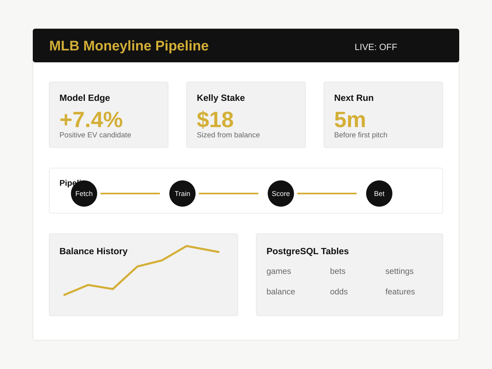

Machine Learning · Automation · Infrastructure
MLB Betting Pipeline
An automated MLB moneyline system that fetches live game data, trains a gradient-boosted model, identifies positive-expected-value bets, places Kalshi orders when live mode is enabled, and exposes the whole operation through a self-hosted FastAPI dashboard.

Problem
Sports betting models are easy to prototype and hard to operate. The interesting work is not just predicting a winner; it is collecting reliable pre-game data, converting odds into comparable probabilities, deciding when an edge is large enough to act on, sizing the wager responsibly, and keeping enough operational visibility to know what the system is doing.
I built this as an end-to-end production-style pipeline instead of a notebook. The system needed to run unattended on my homelab, preserve every prediction and bet in PostgreSQL, and give me a dashboard where I could inspect model performance before allowing real orders.
Architecture
Data Collection
Fetches schedules, scores, pitcher IDs, odds, weather, FanGraphs statistics, and Kalshi balance data from multiple APIs and fallback sources.
Prediction Loop
Runs a trained gradient-boosted model, calculates edge against market prices, and applies Kelly-style sizing before a bet is recorded or placed.
Operations
Runs on two Proxmox LXC containers: PostgreSQL 16 on one container and Python 3.12 services on another, managed by systemd.
- fetch_data.py pulls schedule, odds, pitcher, weather, and FanGraphs inputs.
- predict.py scores games, calculates market edge, and sizes the bet.
- place_bet.py submits Kalshi orders when live betting is enabled, or dry-runs when it is off.
- run_pipeline.py orchestrates the full loop and wakes up five minutes before scheduled games.
What I Built
The pipeline stores games, bets, balance history, and settings in PostgreSQL. A one-time migration loads roughly 36,000 historical games from 2010-2025 into the database so the model has enough history to train from.
The dashboard is a FastAPI app with tabs for balance history, upcoming games, bet logs, model performance, and raw database inspection. It also includes a live betting toggle backed by the settings table, so I can switch between dry-run and real order placement without restarting the pipeline.
I also implemented the deployment path: uv-managed Python dependencies, systemd services for both the pipeline and dashboard, and operational commands for checking logs and recovering services after reboot or failure.
Tradeoffs
The current public demo is limited because the dashboard sits behind authentication and can expose betting/balance information. The next step is a read-only public landing page with sanitized screenshots, architecture notes, and sample performance charts.
I also default live betting to off. That makes the system safer to operate while I evaluate calibration and market behavior, and it keeps the same code path useful for both simulation and production.
Links
The live dashboard is intentionally private for now. A public read-only site can be added without exposing account or betting controls.